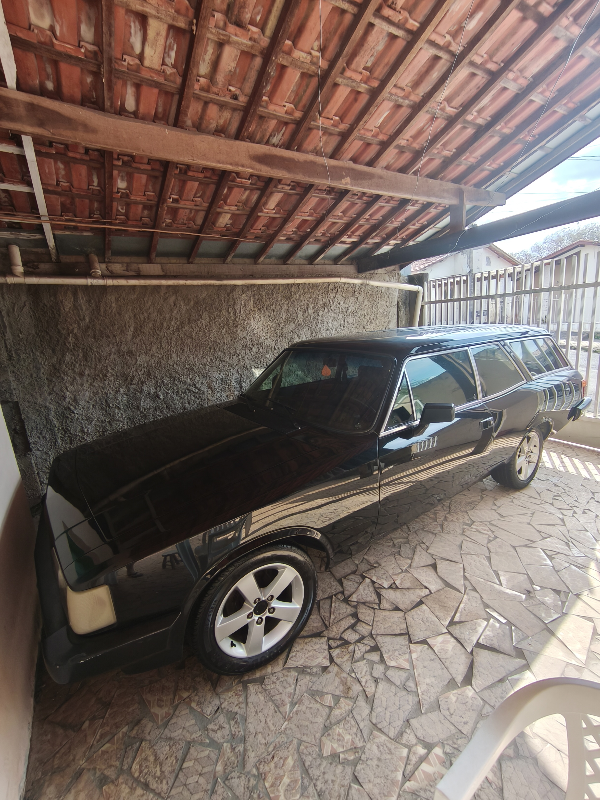

Portifólio do Pacheco
Gustavo de Olivera Dias Pacheco 17 anos • Tietê – São Paulo Sobre Mim Sou Gustavo de Olivera Dias Pacheco, estudante e atleta, com foco em alta performance tanto nos esportes tradicionais quanto nos E-sports. Desde cedo desenvolvi disciplina, competitividade e mentalidade estratégica, características que aplico dentro e fora do jogo. Tenho como objetivo construir minha carreira como jogador profissional de E-sports, representando equipes em alto nível e evoluindo constantemente minhas habilidades técnicas e mentais. Experiência e Conquistas 🏆 Campeão de Interclasse – Atuação como protagonista da equipe 🤾 4x Liga LHESP Handebol (Biatex) 🥇 2 Olimpíadas Escolares 1ª em Matemática 1ª em Português Habilidades 🎮 Alto desempenho em E-sports 🤾 Experiência competitiva em esportes coletivos 🧠 Facilidade de adaptação 📚 Rápido aprendizado 💪 Mentalidade competitiva 🏆 Foco em evolução contínua


